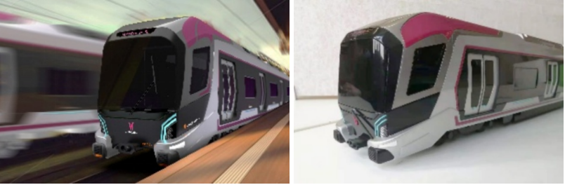

设计研究与创新方法 - 第5-1讲
授课教师：唐星-助理教授 | 西南交通大学设计艺术学院 | 主题：形状文法
文化元素提取
广州文化元素选择
从物质层、制度层和精神层三方面辨识选择文化元素：
- 五羊：广州市又被称为羊城，其历史传说追溯到西周
- 舞狮：广州传统风俗文化之一，庆典活动的重要元素
- 画眉鸟：广州市市鸟，体型小巧，性格活泼
- 木棉花：广州市市花，色彩鲜艳，代表朝气蓬勃
- 广州大剧院：广州标志性建筑，不规则几何形体设计
表5-1 广州文化元素提取


特征线条提取
在Adobe Illustrator中提取特征线条，作为形状文法推演的基础构成元素。
设计推演与效果
特征曲线组合与筛选
筛选组合特征曲线，得到列车前脸造型特征曲线组和侧身造型特征曲线组。
表5-2 广州文化元素特征线条提取

形状文法推演
在Adobe Illustrator中执行形状文法推演规则：
- 前脸造型：使用增删规则添加外轮廓曲线，通过拉伸使造型棱角分明
- 侧身造型：通过置换曲线、调整比例、删减与增加曲线等操作推演出新造型
设计过程展示


最终设计方案
将推演得到的前脸造型和侧身造型导入三维建模软件Rhino中建立三维模型，结合广州地铁6号线典型的紫红色进行涂装设计，并运用Keyshot和Photoshop进行渲染和效果图制作。
设计价值
- 有效提取符合旅客认知的广州文化意象元素
- 将文化元素融入地铁列车外观方案
- 使广州地铁6号线列车成为城市文化的载体
- 增强城市居民对地铁列车的文化认同